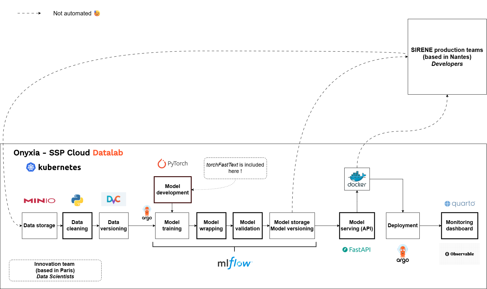
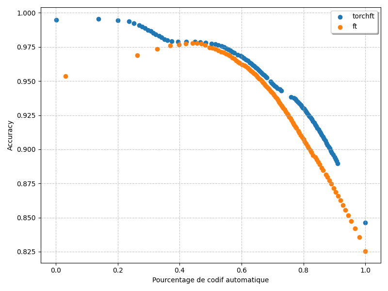

class MLFlowPyTorchWrapper(mlflow.pyfunc.PythonModel):
def __init__()
...
def predict(self, model_input: list[SingleForm], params=None) -> list[PredictionResponse]:
query = self.preprocess_inputs(
inputs=model_input,
)
# Preprocess inputs
text = query[self.text_feature].values
categorical_variables = query[self.categorical_features].values
...
all_scores = []
for batch_idx, batch in enumerate(dataloader):
with torch.no_grad():
scores = self.module(batch).detach()
all_scores.append(scores)
all_scores = torch.cat(all_scores)
probs = torch.nn.functional.softmax(all_scores, dim=1)
...
responses = []
for i in range(len(predictions[0])):
response = process_response(predictions, i, nb_echos_max, prob_min, self.libs)
responses.append(response)
return responsestorchFastText: Modernizing the MLOps pipeline at Insee for text classsification
1 October 2025
Link to the presentation:
👨🔬 Who are we ?
Two data scientists from the innovation team at Insee:
- Cédric Couralet
- Previously software developer, architect, devops/security engineer… at Insee
- Currently helping real data scientists bridge the gap between experimentation and production (How to talk to IT)
- Open Source advocate
👨🔬 Who are we ?
Two data scientists from the innovation team at Insee:
- Meilame Tayebjee
- Graduated 2024
- Currently pursuing a part-time PhD in AI applied to health econometrics
- At Insee:
- working on deep learning for text classification, computer vision with remote sensing data, MLOps practices
- exploring explainability, calibration, LLMs, RAGs & agentic workflows
💡 What will we discuss about ?
- MLOps pipeline for text classification at Insee
- Deploying a PyTorch model on CPU-bound secured offline environment
- Open-sourcing a PyTorch package: why and how
1️⃣ Context
Use case (1/2)
- NACE automatic coding (code APE) for the national business registry (Sirene)
- Given an activity description and some additional info, assign one of the ~750 NACE labels
- Sparse-label extreme multi-class text classification task with categorical variables
- If model is not confident, human annotators enter the loop (reprise manuelle)
- The automatic coding model reliability is highly critical
Use case (2/2)
- Lot of training data, but not necessarily reliable
- Coming from previous classification by a deterministic algorithm (Sicore) (1996-2021) and fastText (2021-2025)
- Training on GPU but non-batched (online) inference on CPU (secured offline environment)
- Special care about responsive inference time (<200 ms)
2️⃣ MLOps pipeline
The ideal MLOps pipeline…

… vs ours
Data cleaning
The first step of our pipeline (before any preprocessing or splitting) is a label correction based on expert rules:
- Raw labels are coming from the previous production model: they are not fully reliable
- We correct them using several techniques, based on expert-guided rules
- The simplest one being REGEX (if text contains xxx then relabel as yyy)
Extensive use of MLFLow
- MLflow used as a:
- Training monitor
- Model store and “versioner”
- Model wrapper (using pyfunc object from MLFLow)
- Models are packaged with all the metadata necessary to run inference
The wrapper
Model validation
We use a custom metric reflecting the needs of our use case: the automation rate vs accuracy on automatically coded samples curve
API serving
- Text classification model served through a containerized REST API:
- Simplicity for end users
- Standard query format
- Scalable
- Modular and portable
- Simple design thanks to the MLFLow wrapper
- Continuous deployment with Argo CD
@router.post("/", response_model=List[PredictionResponse])
async def predict(
credentials: Annotated[HTTPBasicCredentials, Depends(get_credentials)],
request: Request,
forms: BatchForms,
...
num_workers: int = 0,
batch_size: int = 1,
):
"""
Endpoint for predicting batches of data.
Args:
credentials (HTTPBasicCredentials): The credentials for authentication.
forms (Forms): The input data in the form of Forms object.
num_workers (int, optional): Number of CPU for multiprocessing in Dataloader. Defaults to 1.
batch_size (int, optional): Size of a batch for batch prediction.
For single predictions, we recommend keeping num_workers and batch_size to 1 for better performance.
For batched predictions, consider increasing these two parameters (num_workers can range from 4 to 12, batch size can be increased up to 256) to optimize performance.
Returns:
list: The list of predicted responses.
"""
input_data = forms.forms
...
output = request.app.state.model.predict(input_data, params=params_dict)
return [out.model_dump() for out in output]API serving

API serving
async function transformToPost(description, top_k) {
// Base URL with query parameters
const baseUrl = `https://codification-ape2025-pytorch.lab.sspcloud.fr/predict/?nb_echos_max=${top_k}&prob_min=0.01&num_workers=0&batch_size=1`;
// Build the request body according to the expected schema
const body = {
forms: [
{
description_activity: description
}
]
};
// Send the POST request
const response = await fetch(baseUrl, {
method: "POST",
headers: {
"Content-Type": "application/json"
},
body: JSON.stringify(body)
});
// Parse and return the JSON response
return response.json();
}viewof activite = Inputs.text({
label: '',
value: 'coiffure',
width: 800
})
viewof prediction = Inputs.button("Run Prediction", {
reduce: async () => {
return await transformToPost(activite, 5);
}
})
// afficher les résultats joliment
prediction_table = {
if (!prediction || !prediction.length) {
return html``
}
// la réponse est un tableau avec un seul objet
const result = prediction[0]
const { IC, MLversion, ...codes } = result
const rows = Object.values(codes).map(({ code, libelle, probabilite }) => {
return html`
<tr>
<td>${code} – ${libelle}</td>
<td style="text-align:right;">${probabilite.toFixed(3)}</td>
</tr>
`
})
return html`
<table style="border-collapse: collapse; width: 100%;">
<caption style="margin-bottom: 0.5em;">
Confidence score : ${(+IC).toFixed(3)}
</caption>
<thead>
<tr>
<th style="text-align:left;">Description (NA2008)</th>
<th style="text-align:right;">Probability</th>
</tr>
</thead>
<tbody>
${rows}
</tbody>
</table>
`
}Monitoring
- Monitoring the model in a production environment is necessary:
- To detect distribution drifts in input data
- To check that the model has a stable behavior
- To decide when to retrain a model
- Ideally, we would like to track model accuracy in real-time but expensive
- In addition, monitoring of the API: latency, memory managment, disk usage, etc.
Monitoring
- How we do it:
- API logs its activity
- Logs are fetched and formatted periodically
- Metrics are computed from the formatted logs
- Display on a dashboard
Monitoring

3️⃣ torchFastText, an open-source package to distribute PyTorch models
Beyond fastText ?
- fastText: a powerful and efficient model that has been used in production since 2021…
- … but the library repo has been archived on March 19th, 2024
This non-maintenance is highly problematic in the medium-term:
- Potential appearance of (non-fixable) bugs
- Conflicting versions of dependencies
- Modernization hindrance
PyTorch: why ? Some strategic reflections…
💡 Idea: Develop our custom PyTorch-based model to:
- adapt and customize the architecture for our specific needs (text classification with categorical variables)
- limit dependencies to external libraries and internalize maintenance for more robustness in the long-term
- access to the vibrant deep learning / NLP community to develop additional features (explainability with Captum, calibration with torch-uncertainty…)…
- … or use pre-trained models on Hugging Face down the road (when we have GPUs in production…)
Our solution: the torchFastText package
The package:
- Provides a standard yet flexible architecture for automatic coding needs…
- … that stays close to the fastText methodology for now but is led to evolve
- Distributes the raw PyTorch model, a Lightning module as well as a wrapper class for a quick grip
- Is open-sourced and aims at fostering collaboration ! Feel free to raise an issue, report a bug or open a PR.
PyTorch model & Lightning module
from torchFastText.model import FastTextModel, FastTextModule
import torch
model = FastTextModel(embedding_dim=80,
num_classes=732,
num_rows = 20000,
categorical_vocabulary_sizes=[10, 20],
categorical_embedding_dims=5
)
module = FastTextModule(
model=model,
loss= torch.nn.CrossEntropyLoss(),
optimizer=torch.optim.Adam,
optimizer_params={"lr": 0.001},
scheduler = None,
scheduler_params=None
)
print(model)
print(module)FastTextModel(
(embeddings): Embedding(20000, 80, padding_idx=0, sparse=True)
(emb_0): Embedding(10, 5)
(emb_1): Embedding(20, 5)
(fc): Linear(in_features=85, out_features=732, bias=True)
)
FastTextModule(
(model): FastTextModel(
(embeddings): Embedding(20000, 80, padding_idx=0, sparse=True)
(emb_0): Embedding(10, 5)
(emb_1): Embedding(20, 5)
(fc): Linear(in_features=85, out_features=732, bias=True)
)
(loss): CrossEntropyLoss()
(accuracy_fn): MulticlassAccuracy()
)Tokenizer
from torchFastText.datasets import NGramTokenizer
training_text = ['boulanger', 'coiffeur', 'boucherie', 'boucherie charcuterie']
tokenizer = NGramTokenizer(
min_n=3,
max_n=6,
num_tokens= 100,
len_word_ngrams=2,
min_count=1,
training_text=training_text
)
print(tokenizer.tokenize(["boulangerie"])[0])[['<bo', 'bou', 'oul', 'ula', 'lan', 'boul', 'nge', '<boul', 'eri', 'rie', 'ie>', 'boul', 'boul', 'oula', 'ulan', 'lang', 'ange', 'nger', 'geri', 'erie', 'rie>', '<boul', 'boula', 'oulan', 'ulang', 'lange', 'anger', 'ngeri', 'gerie', 'erie>', '<boula', 'boulan', 'oulang', 'ngerie', 'langer', 'angeri', 'ngerie', 'gerie>', '</s>', 'boulangerie </s>']]The wrapper class
A quick way to launch a training in two lines of code.
from torchFastText import torchFastText
# Initialize the model
model = torchFastText(
num_tokens=1000000,
embedding_dim=100,
min_count=5,
min_n=3,
max_n=6,
len_word_ngrams=True,
sparse=True
)
# Train the model
model.train(
X_train=train_data,
y_train=train_labels,
X_val=val_data,
y_val=val_labels,
num_epochs=10,
batch_size=64
)
# Make predictions
predictions = model.predict(test_data)4️⃣ Perspectives
MLOps
- Bridging the gap between innovation and production:
- full automation between data extraction, model training and qualification, model deployment
- observability of the model in production: logs, continuous annotation…
From torchFastText to torchTextClassifiers
- Distribution of untrained raw PyTorch text classification architectures
- including all SOTA architectures, incl. BERT, Label Attention etc.
- enable custom parametrization (you can make your own small BERT!)
- enable easy training and inference on GPU/CPU
From torchFastText to torchTextClassifiers
- Additional features:
- train and use a custom tokenizer
- controlling uncertainty: explainability, calibration & conformal prediction
- quantization
- push / pull from HF
- For those who can not directly use big models from HF and/or want to train their own flexible models
- Always fully open-sourced!
Thank you for your attention.
Find here all of our repos on the NACE coding project: